Application and Workload Update #
Overview #
The purpose of this document is to provide steps and ways to migrate the workloads and applications from Gen1 to Gen2 after data migration is completed.
This can be applicable for below migration patterns:
-
Incremental Copy pattern
-
Lift and Shift copy pattern
-
Dual Pipeline pattern
As part of this, we will configure services in workloads used and update the applications to point to Gen2 mount.
NOTE: We will be covering below azure services
- Azure Data Factory
- Azure Databricks
- SQL Data Warehouse
- HDInsight
Prerequisites #
The migration of data from Gen1 to Gen2 should be completed
How to Configure and Update Azure Databricks #
Applies where Databricks is used for data ingestion to ADLS Gen1.
Before the migration:
-
Mount configured to Gen1 path
Sample code showing mount path configured for ADLS Gen1 using service principle:
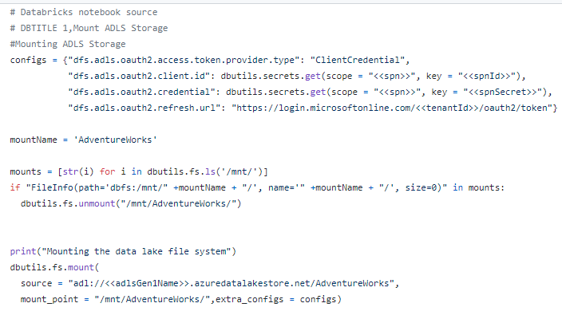
-
Set up DataBricks cluster for scheduled job run
Sample snapshot of working code:
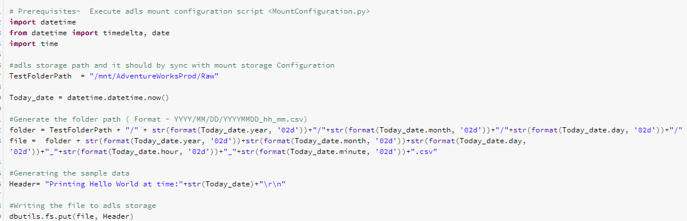
Note: Refer to Application\IncrementalSampleLoad.py script for more details.
After the migration:
-
Change the mount configuration to Gen2 container
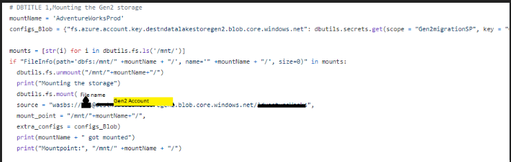
Note: Stop the job scheduler and change the mount configuration to point to Gen2 with the same mount name.
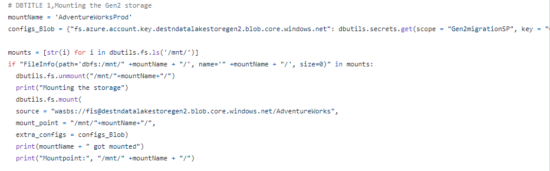
Note: Refer to Application\MountConfiguration.py script for more details.
-
Reschedule the job scheduler
-
Check for the new files getting generated at the Gen2 root folder path
How to Configure and Update Azure Datafactory #
Once the data migration using ADF is completed from ADLS Gen1 to Gen2, follow the below steps:
-
Stop the trigger to Gen1 used as part of Incremental copy pattern.
-
Modify the existing factory by creating new linked service to point to Gen2 storage.
Go to –> Azure Data Factory –> Click on Author –> Connections –> Linked Service –> click on New –> Choose Azure Data Lake Storage Gen2 –> Click on Continue button
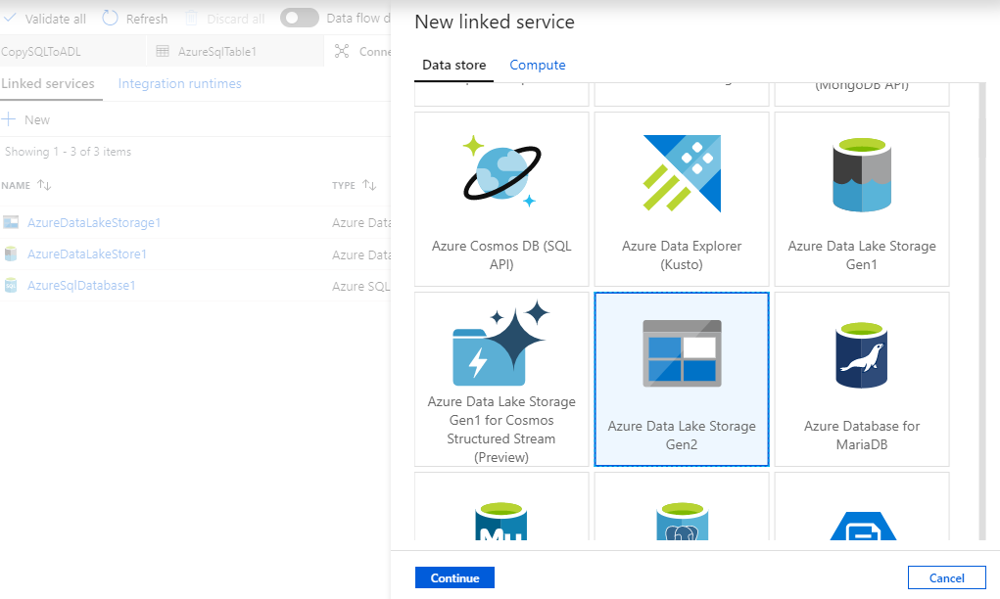
Provide the details to create new Linked service to point to Gen2 storage account.
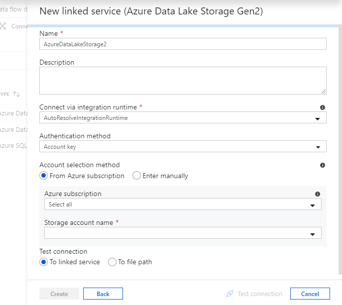
-
Modify the existing factory by creating new dataset in Gen2 storage.
Go to –> Azure Data Factory –> Click on Author –> Click on Pipelines –> Select the pipeline –> Click on Activity –> Click on sink tab –> Choose the dataset to point to Gen2
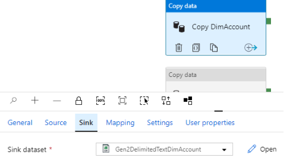
-
Click on Publish all
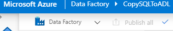
-
Go to Triggers and activate it.
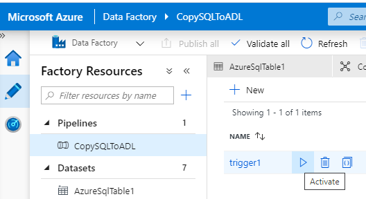
-
Check for the new files getting generated at the Gen2 root folder path
How to Configure and update HDInsight #
Applies where HDInsight is used as workload to process the Raw data and execute the transformations. Below is the step by step process used as part of Dual pipeline pattern.
Prerequisite
Two HDInsight clusters to be created for each Gen1 and Gen2 storage.
Before Migration
The Hive script is mounted to Gen1 endpoint as shown below:
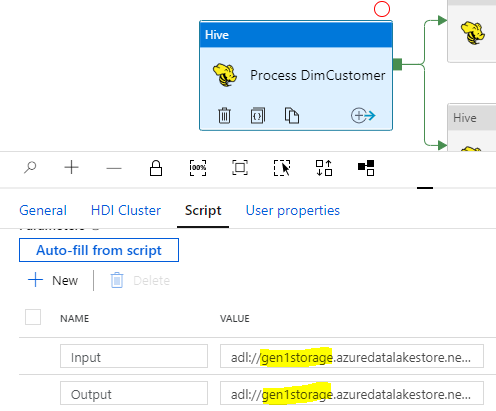
After Migration
The Hive script is mounted to Gen2 endpoint as shown below:
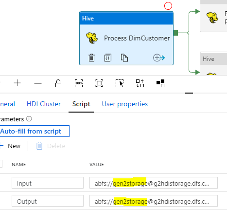
Once all the existing data is moved from Gen1 to Gen2, Start running the worloads at Gen2 endpoint.
How to configure and update Azure Synapse Analytics #
Applies to the data pipelines having Azure synapse analytics formerly called as Azure SQL DW as one of the workloads. Below is the step by step process used as part of Dual pipeline pattern
Before Migration
The stored procedure activity is pointed to Gen1 mount path.
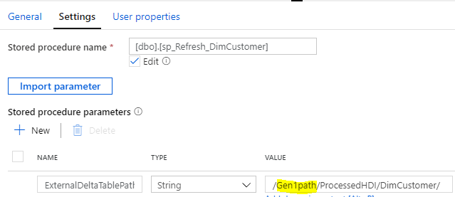
After Migration
The stored procedure activity is pointed to Gen2 endpoint.
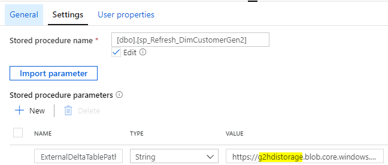
Run the trigger

Check the SQL table in the Data warehouse for new data load.
Cutover from Gen1 to Gen2 #
After you’re confident that your applications and workloads are stable on Gen2, you can begin using Gen2 to satisfy your business scenarios. Turn off any remaining pipelines that are running on Gen1 and decommission your Gen1 account.